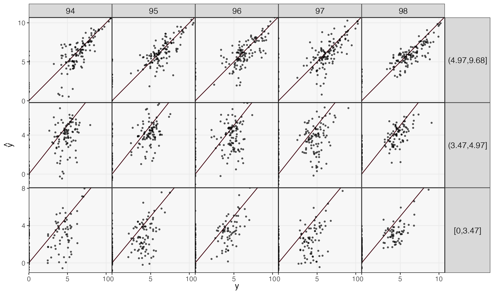
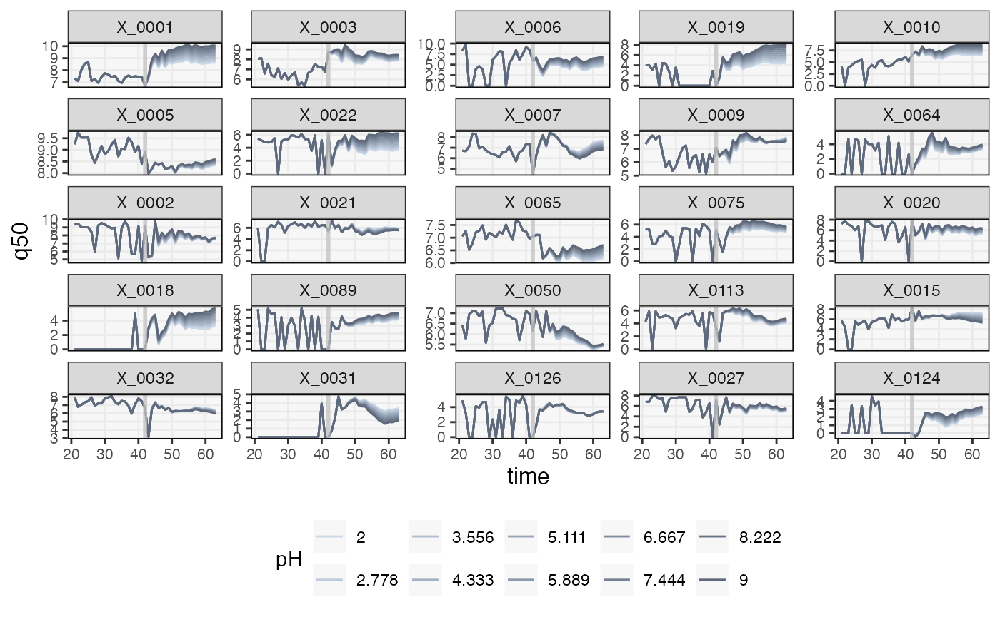

Modulating pH in an Aquaculture Microbiome
aqua.RmdData and Problem Context
Sometimes we are interested in modeling how an ecosystem shifts under a continuously modulated input, rather than an abrupt shock This vignette explores how transfer function models can be adapted to this setting. We re-analyze data from , which studied the microbiome from associated with an eel aquaculture. Eels were grown in five different tanks, and the microbiomes in each tank were sequenced daily for 120 days. The study gathered a variety of tank-level environmental characteristics, including oxygenation and pH. A noticeable shift in pH occurred for several of the tanks midway through the study. We’ll quantify this effect and use transfer functions to simulate hypothetical trajectories under continuously-modulated pH changes.
First, let’s load the packages used in this vignette. The block
defining th just sets ggplot2 color
themes.
library(mbtransfer)
library(tidyverse)
library(glue)
th <- theme_bw() +
theme(
panel.grid.minor = element_blank(),
panel.background = element_rect(fill = "#f7f7f7"),
panel.border = element_rect(fill = NA, color = "#0c0c0c", linewidth = 0.6),
axis.text = element_text(size = 8),
axis.title = element_text(size = 12),
legend.position = "bottom"
)
theme_set(th)
set.seed(20230524)We’ve hosted lightly
preprocessed versions of the raw data at the
following figshare
links. We’ll use the pH column in
interventions as input \(w_{nt}\) in a transfer function.
reads <- read_csv("https://figshare.com/ndownloader/files/40357894/reads.csv") |>
column_to_rownames("sample")
samples <- read_csv("https://figshare.com/ndownloader/files/40357897/samples.csv")
subject <- read_csv("https://figshare.com/ndownloader/files/40357891/subject.csv")
interventions <- read_csv("https://figshare.com/ndownloader/files/40357888/interventions.csv") |>
column_to_rownames("sample")Based on these “long” data.frames, we can create a
structured ts object. These have “wide,” sample-level
matrices that are convenient for autoregressive modeling. There are some
missing timepoints in the original data, and we linearly interpolate
these. Finally, from the original publication, two of the tanks seem to
have noticeably different behavior than the rest. They also have a clear
shift in pH in days 40 - 50, so we’ll concentrate the remainder of the
analysis on just these tanks.
ts <- reads |>
ts_from_dfs(interventions, samples, subject) |>
interpolate()
ts <- ts[1:3]Prediction
We’ll evaluate the forecasting performance of a model trained on these two tanks1. In the block below, we train a model using the first 96 (out of 128) days within each tank. Then, we forecast the remaining 32 days.
ts_missing <- subset_values(ts, 1:96)
fit <- mbtransfer(ts, P = 2, Q = 2, nrounds = 1e3, eta = 1e-2)
ts_pred <- predict(fit, ts_missing)We can evaluate performance on these held out days by plotting the truth against the forecast. Performance is generally better in the more abundant species, and short time horizons \(h\) are easier to predict than long ones.
reshape_preds(ts, ts_pred, 3) |>
filter(h > 93, h < 99) |>
ggplot() +
geom_abline(slope = 1, col = "#400610") +
geom_point(aes(y, y_hat), size = .7, alpha = .6) +
facet_grid(factor(quantile, rev(levels(quantile))) ~ glue("lag {h - 93}"), scales = "free_y") +
labs(x = expression(y), y = expression(hat(y))) +
scale_x_continuous(expand = c(0, 0), n.breaks = 3) +
scale_y_continuous(expand = c(0, 0), n.breaks = 3) +
theme(
axis.text = element_text(size = 10),
panel.spacing = unit(0, "line"),
strip.text.y = element_text(angle = 0, size = 12),
strip.text.x = element_text(angle = 0, size = 12),
legend.title = element_text(size = 14),
legend.text = element_text(size = 11),
)
Attribution Analysis: Selecting Important Taxa
Which taxa are most sensitive to changes in pH? Since we trained our
transfer model using pH as an input, we can simulate new trajectories
under hypothetical pH shifts. First, we create a counterfactual with
only two pH values – one acidic one (2) and another basic one (9). This
is just a device for focusing attention on the taxa that seem to be
affected by pH – we’ll later simulate from a continuous gradient of pH
values. Note that our counterfactuals ws have to specify
all the perturbations, even though we’re really only interested in one
of them. We’ve set AS to 38 because it is a typical value
of that series across all the observed data.
ws <- steps(c("pH" = TRUE, "AS" = FALSE), lengths = 4, L = 4) |>
map(~ 7 * . + 2)
ws[[1]]["AS", ] <- 38
ws[[2]]["AS", ] <- 38
#staxa <- select_taxa(ts, ws[[1]], ws[[2]], \(x) mbtransfer(x, 4, 4, alpha = 1e-3, eta = 0.01), n_splits = 25)
#saveRDS(staxa, file = "staxa-aqua.rds")
staxa <- readRDS("staxa-aqua.rds")
taxa <- staxa$ms |>
select(multisplit, m, lag) %>%
split(.$lag) %>%
map(~ split(., .$multisplit) %>% map(~ pull(., m))) |>
map(~ which(multiple_data_splitting(., q = 0.2)))Let’s check the mirror statistics associated with these taxa. We’re
showing only the 50 taxa with the largest mirror statistics, but even
among these, there are most don’t seem to be affected by pH strongly
enough to be flagged at a \(q = 0.2\)
false discovery rate control level (the default used in mbtransfer,
which can be modified in the select_taxa function).
vis_taxa <- staxa$ms |>
group_by(taxon) |>
summarise(m = mean(m)) |>
slice_max(m, n = 50) |>
pull(taxon)
staxa$ms |>
filter(taxon %in% vis_taxa) |>
mutate(
taxon = taxa(ts)[taxon],
lag = as.factor(lag),
selected = ifelse(taxon %in% unlist(staxa$taxa), "Selected", "Unselected")
) |>
ggplot() +
geom_hline(yintercept = 0, linewidth = 2, col = "#d3d3d3") +
geom_boxplot(aes(reorder(taxon, -m), m, fill = lag, col = lag), alpha = 0.8) +
facet_grid(. ~ selected, scales = "free_x", space = "free_x") +
scale_fill_manual(values = c("#c6dbef", "#6baed6", "#2171b5", "#084594")) +
scale_color_manual(values = c("#c6dbef", "#6baed6", "#2171b5", "#084594")) +
labs(y = expression(M[j]), x = "Taxon") +
theme(axis.text.x = element_text(angle = 90, size = 11))How plausible are these selections? One simple check is to compare each taxon’s abundance against pH across the time series. We’ve sorted taxa according to the strength of the association according to the mirror statistic. Note that, though we could always compute simple \(R^2\) from these scatterplots, any test statistics derived from them would be suspect, since the samples are correlated over time. The effective sample size is not as large as the number of points in each plot might lead you to believe. A transfer function + mirror testing approach accounts for temporal dependence, which is the main reason for going through all the additional modeling effort.
focus_taxa <- unlist(map(staxa$taxa, ~ c(.)))
taxa_order <- staxa$ms |>
group_by(taxon) |>
summarise(median_m = median(m)) |>
arrange(-median_m) |>
pull(taxon)
pivot_ts(ts) |>
mutate(taxon = factor(taxon, levels = taxa(ts)[taxa_order])) |>
filter(taxon %in% focus_taxa, taxon %in% taxa(ts)[vis_taxa]) |>
ggplot() +
geom_point(aes(pH, value), alpha = 0.6, size = 0.8) +
facet_wrap(~ taxon)Next, we’ll see how these taxa vary in response to intermediate
shifts pH, not just the acidic and basic extremes considered above. For
this, we need a richer collection of counterfactuals. The
ws below vary from 2 to 9, and we assume that the shift
lasts for 42 time steps.
L <- 42
ws <- list()
plateaus <- seq(2, 9, length.out = 10)
for (p in seq_along(plateaus)) {
ws[[p]] <- matrix(38, nrow = 2, ncol = L)
colnames(ws[[p]]) <- glue("t{seq_len(L)}")
rownames(ws[[p]]) <- c("pH", "AS")
ws[[p]][1, ] <- rep(plateaus[p], L)
}The predict method for mbtransfer models
looks at the difference between interventions and
values slots, which contain the environmental input and
microbial response variables. Timepoints which are present in
interventions but not values will be used to
forecast new values. With this in mind, we can create a
dataset that will allow us to simulate trajectories under each of the
ws. The idea is to replace the interventions starting at
time L with our counterfactual ws and then
remove all the actually observed values following that timepoint. Both
of these steps are encapsulated in the counterfactual_ts
function below. We usually use this function to compare two pairs of
counterfactuals. Since we are actually generating more than two, we’ll
loop over this function and place a dummy for the third argument (this
would usually define a second, ts2 time counterfactual time
series).
sim_ts_ <- list()
for (i in seq_along(ws)) {
sim_ts_[[i]] <- counterfactual_ts(ts, ws[[i]], ws[[i]], start_ix = L)$ts1
}Finally, we predict a series under each of the hypothetical pH interventions. We’ve visualized a few of the taxa whose trajectories are shifted by different degrees according to the strength of the intervention. The effects seems essentially additive. In principle, the response “shapes” could change for different pH, the result of potential feedback loops between taxa. However, this does not seem to be the case for these data.
pal <- c("#cbd8e8", "#becbdc", "#b1bed0", "#a4b2c4", "#97a5b8", "#8b99ac", "#808da0", "#748193", "#697587", "#5e697b")
sim_ts <- map(sim_ts_, ~ predict(fit, .)) |>
map_dfr(pivot_ts, .id = "counterfactual")
sim_ts |>
# filter(taxon %in% c("X_0001", "X_0019", "X_0129", "X_0009", "X_0012", "X_0033"), time > 20, time < 70) |>
filter(taxon %in% focus_taxa, time > 20, time < 70) |>
mutate(
pH = factor(round(plateaus[as.integer(counterfactual)], 3)),
taxon = factor(taxon, levels = taxa(ts)[taxa_order])
) |>
group_by(taxon, time, pH) |>
summarise(q50 = median(value)) |>
ggplot() +
geom_line(aes(time, q50, col = pH)) +
geom_vline(col = "#c1c1c1c1", xintercept = L, linewidth = 1) +
facet_wrap(~ taxon, scales = "free_y") +
scale_fill_manual(values = pal) +
scale_color_manual(values = pal)